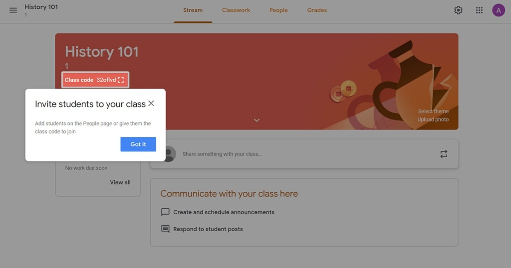

Mengenal Apa itu Google Classroom : Fitur, Fungsi, dan Keunggulannya

Google Classroom (Ruang Kelas Google) adalah suatu serambi aplikasi pembelajaran campuran secara online yang dapat digunakan secara gratis. Pendidik bisa membuat kelas mereka sendiri dan membagikan kode kelas tersebut atau mengundang para siswanya. Google Classroom ini diperuntukkan untuk membantu semua ruang lingkup pendidikan yang membantu siswa untuk menemukan atau mengatasi kesulitan pembelajaran, membagikan pelajaran dan membuat tugas tanpa harus hadir ke kelas.
Tujuan utama Google Classroom adalah untuk merampingkan proses berbagi file antara guru dan siswa Google Classroom menggabungkan Google Drive untuk pembuatan dan distribusi penugasan, Google Docs, Sheets, Slides untuk penulisan, Gmail untuk komunikasi, dan Google Calendar untuk penjadwalan. Siswa dapat diundang untuk bergabung dengan kelas melalui kode pribadi, atau secara otomatis diimpor dari domain sekolah.
Setiap kelas membuat folder terpisah di Drive masing-masing pengguna, dimana siswa dapat mengirimkan pekerjaan untuk dinilai oleh guru. Aplikasi ini tersedia bagi pengguna seluler perangkat iOS dan Android yang memungkinkan pengguna mengambil foto dan melampirkan penugasan, berbagi file dari aplikasi lain dan mengakses informasi secara offline. Guru dapat memantau kemajuan untuk setiap siswa, dan setelah dinilai, guru dapat kembali bekerja bersama dengan komentar.
Fungsi dan keunggulan Google Classroom
Ada beberapa fungsi dan keunggulan yang bisa didapatkan dari Google Classroom dalam pemanfaatannya sebagai Learning Management System (LMS), yaitu :
- Proses setting pembuatan kelas yang cepat dan nyaman
- Hemat dan efisiensi waktu
- Mampu meningkatkan kerjasama dan komunikasi
- Penyimpanan data yang terpusat
- Berbagi sumber daya yang efisien, praktis dan cepat
Proses pembuatan kelas pada Google Classroom sangat cepat dan nyaman jika dibandingkan harus menginstall LMS lokal atau mendaftarkan ke provider LMS. Guru hanya tinggal mengakses aplikasi Google Classroom dan bisa memulai membagikan tugas-tugas dan bahan ajar. Pengajar dapat menambahkan daftar siswa atau berbagi kode unik yang memungkinkan akses ke kelas pada Google Classroom. Interface Google Classroom lebih sederhana dan mudah untuk digunakan (user friendly), sehingga akan ideal digunakan bagi setiap pengajar dengan tingkat pengalaman eLearning yang beragam.
Peserta kelas atau siswa tidak lagi harus mendownload tugas yang diberikan guru. Guru membuat dan mendistribusikan dokumen untuk peserta didik mereka secara online serta juga dapat menentukan peringkat, memberikan umpan balik untuk semua tugas dan melakukan penilaian menggunakan aplikasi Google Classroom. Dengan demikian, ada potensi untuk penghematan waktu dari kedua belah pihak baik peserta didik maupun gurunya. Semuanya dilakukan secara paperless (bebas kertas), sehingga tidak ada waktu yang terbuang untuk mendistribusikan dokumen fisik dan peserta didik dapat menyelesaikan tugas mereka dengan tepat secara online, sehingga lebih mudah bagi mereka untuk memenuhi deadline waktu yang diberikan dan belajar secara online dapat disesuaikan dengan jadwal sehari-hari mereka.
Salah satu manfaat paling penting dari menggunakan Google Classroom adalah kolaborasi online yang efisien. Guru dapat mengirimkan pemberitahuan ke peserta atau siswa mereka untuk memulai diskusi online atau memberitahu mereka tentang kegiatan pembelajaran online tertentu. Di sisi lain, peserta didik memiliki kesempatan untuk memberikan umpan balik kepada rekan-rekan mereka dengan mengunggah postingan langsung ke dalam diskusi di Google Classroom.
Dengan demikian, jika mereka membutuhkan bantuan karena kesulitan memahami suatu tugas atau ingin mempelajari lebih lanjut tentang topik tertentu, mereka bisa mendapatkan masukan langsung disaat yang bersamaan dari teman sekelas virtual mereka. Pada dasarnya, Google Classroom berfungsi untuk meningkatkan aspek pembelajaran sosial pendidikan online yang memungkinkan siswa untuk mendapatkan keuntungan dari pengalaman dan keterampilan rekan belajar mereka.
Hanya pada satu tempat yakni Google Classroom, semua pembelajaran berada dalam satu lokasi terpusat. Siswa dapat melihat semua tugas-tugas mereka dalam folder tertentu, guru dapat menyimpan bahan eLearning dan kegiatan untuk tahun ajaran secara cloud dan semua peringkat atau nilai dapat dilihat dalam aplikasi. Kedua belah pihak tidak perlu khawatir mengenai dokumen atau penilaian yang hilang, karena semuanya tersimpan dalam LMS yang gratis ini.
Fasilitator atau guru online dan pelatih memiliki kemampuan untuk berbagi informasi dan sumber daya online dengan peserta mereka secara langsung langsung. Dibandingkan harus memperbarui kursus eLearning atau mengirim email individu untuk setiap siswa, cukup dengan mengakses aplikasi Google Classroom, guru dapat mendistribusikan link ke sumber daya online dan materi eLearning tambahan yang dapat menguntungkan siswa mereka. Cara ini memberikan kesempatan kepada siswa untuk memperoleh update tepat waktu yang berhubungan dengan pelajaran saat ini, sehingga mereka dapat lebih memahami materi dan akses peralatan multimedia yang dapat meningkatkan pengalaman eLearning mereka.
Fitur- fitur Google Classroom
Google Classroom mempunyai banyak kemudahan seperti Google Drive, Google Docs, Sheets and Slides, dan Gmail yang akan membantu lembaga pendidikan untuk lebih mudah dalam mengajar tanpa materi fisik seperti kelas, papan tulis dan alat tulis. Berikut beberapa fitur- fitur yang sangat menunjang pembelajaran online ini :
- Tugas (Assignments)
- Penilaian (Grading)
- Komunikasi yang lancar
- Laporan Orisinalitas
- Arsip pembelajaran
- Aplikasi seluler
- Keamanan Pribadi
Setiap tugas yang diunduh akan disimpan dan dinilai pada rangkain aplikasi produktivitas Google yang telah memunkinkan kolaborasi online ini. Daripada hanya berbagi dokumen yang berada di Google Drive siswa dengan guru, file di-host di Drive siswa dan kemudian dikirim untuk dinilai. Guru dapat memilih file sebagai templat sehingga setiap siswa dapat mengedit salinan mereka sendiri dan kemudian kembali untuk mendapatkan nilai sehingga semua siswa bisa melihat, menyalin, atau mengedit dokumen yang sama. Siswa juga dapat memilih untuk melampirkan dokumen tambahan dari Drive mereka ke tugas.
Google Classroom mendukung banyak cara penilaian yang berbeda. Guru memiliki opsi untuk memantau kemajuan setiap siswa pada tugas di mana mereka dapat membuat komentar dan mengedit. Tugas yang diubah dapat dinilai oleh guru dan dikembalikan dengan komentar untuk memungkinkan siswa merevisi tugas dan dikembalikan. Setelah dinilai, tugas hanya dapat diedit oleh guru kecuali guru mengembalikan tugas.
Pengumuman dapat diposting oleh guru ke aliran kelas yang dapat dikomentari oleh siswa yang memungkinkan komunikasi dua arah antara guru dan siswa. Siswa juga dapat memposting ke kelas tetapi tidak akan setinggi prioritas sebagai pengumuman oleh guru dan dapat dimoderasi. Berbagai jenis media dari produk Google seperti video YouTube dan file Google Drive dapat dilampirkan ke pengumuman dan pos untuk berbagi konten. Gmail juga menyediakan opsi email bagi guru untuk mengirim email ke satu atau lebih siswa di antarmuka Google Classroom. Kelas dapat diakses di web atau melalui aplikasi seluler Kelas Android dan iOS
Laporan orisinalitas diperkenalkan pada Januari 2020 yang memungkinkan pendidik dan siswa untuk melihat bagian dan bagian dari karya yang diajukan yang berisi kata-kata yang persis atau mirip dengan yang dari sumber lain. Untuk siswa, ini menyoroti bahan sumber dan tanda kutip yang hilang untuk membantu siswa dalam meningkatkan tulisan mereka. Guru juga dapat melihat laporan orisinalitas, memungkinkan mereka untuk memverifikasi integritas akademik dari karya siswa yang disampaikan. Di G Suite for Education (gratis), guru dapat mengaktifkan laporan orisinalitas untuk 3 tugas. Pembatasan ini dicabut pada Google Apps for Education (berbayar).
Ruang Kelas memungkinkan instruktur untuk mengarsipkan kursus pada akhir semester atau tahun. Ketika sebuah kursus diarsipkan, maka akan dihapus dari beranda dan ditempatkan di area Kelas Arsip untuk membantu para guru mengatur kelas mereka saat ini. Saat sebuah kursus diarsipkan, guru dan siswa dapat melihatnya, tetapi tidak akan dapat mengubahnya hingga dipulihkan.
Aplikasi seluler Google Classroom, diperkenalkan pada Januari 2015, tersedia untuk perangkat iOS dan Android. Aplikasi memungkinkan pengguna mengambil foto dan melampirkannya ke tugas mereka, berbagi file dari aplikasi lain, dan mendukung akses offline.
Berbeda dengan layanan konsumen Google, Google Classroom, sebagai bagian dari G Suite for Education, tidak menampilkan iklan apa pun dalam antarmuka untuk siswa, dosen, dan guru, dan data pengguna tidak dipindai atau digunakan untuk tujuan periklanan.
Kesimpulan dan Penutup
Setelah membaca fungsi dan keunggulan Google Classroom diatas, membuat aplikasi dari Google yang satu ini menjadi banyak pilihan sekolah, universitas dan lembaga pendidikan lainnya sebagai pilihan utama mereka di tengah pandemi corona saat ini. Karena para peserta kelas tidak lagi perlu keluar rumah untuk berinteraksi dan belajar di kelas.
Selain itu Google Classroom juga mempunyai banyak fitur yang praktis, efisien dan terjamin keamanannya. Kelas pembelajaran akan tetap tersimpan meski secara online, interaksi guru dan siswa juga dapat terjadi dengan baik. Pembelajaran akan terasa lebih mudah mengingat Google Classroom ini juga dapat diakses dimana saja dan kapan saja.
Siswa dan pendidik juga dapat belajar dan mengajar melalui perangkat seluler Android atau iOS mereka. Pembagian materi pembelajaran juga terasa lebih ringkas, pekerjaan siswa dan penilaian juga menjadi lebih transparan. Para siswa juga dapat menyapa dan bekerja sama mengerjakan tugas dengan teman sekelas mereka layaknya di kelas yang sebenarnya.